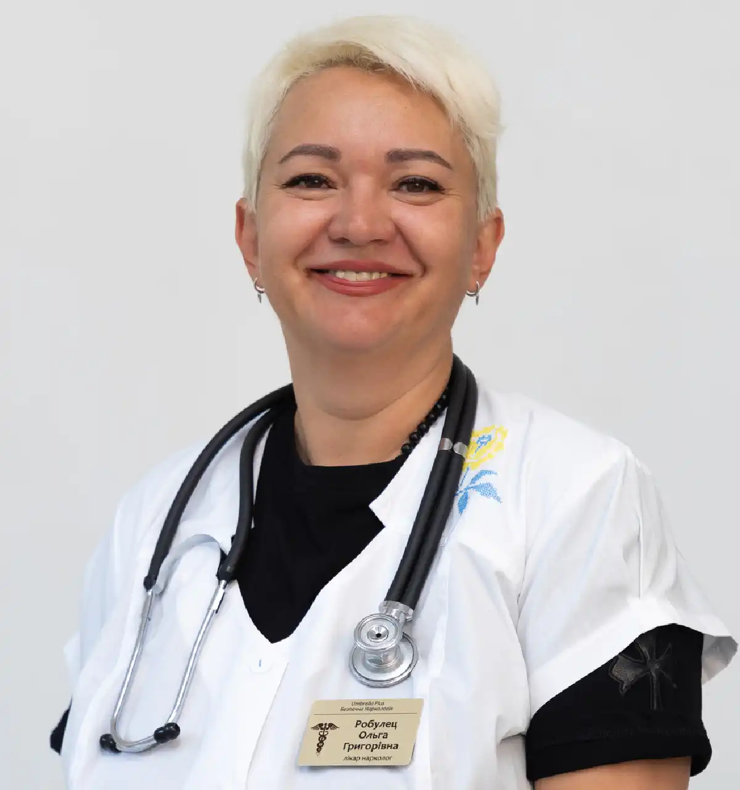

+38(068)
79 72 782
+38(068)
79 72 782Срочный вывод из запоя в Холодногорском районе Харькова — вызов нарколога на дом
Индивидуальный подход и медицинская поддержка


Бесплатная консультация, работаем круглосуточно 24/7
Индивидуальный подход и медицинская поддержка

Дата написания: 16 окт. 2026 г.
Последнее обновление: 17 окт. 2026 г.
Срочный вывод из запоя в Холодногорском районе Харькова — медицинская помощь пациентам, которые столкнулись с последствиями длительного употребления алкоголя и не могут самостоятельно справиться с ухудшением самочувствия. Вызов нарколога на дом в Харькове позволяет пройти обследование, получить консультацию врача и при отсутствии противопоказаний начать лечение в домашних условиях. Помощь может включать медикаментозную терапию алкогольной абстиненции, коррекцию обезвоживания и медицинское наблюдение. Вывод из запоя на дому в Холодногорском районе Харькова проводится с учетом продолжительности употребления алкоголя, возраста пациента, выраженности симптомов и сопутствующих заболеваний. Врач оценивает состояние, определяет риск осложнений и выбирает безопасную тактику лечения. При тяжелом абстинентном синдроме, судорогах, галлюцинациях или нарушении сознания необходима экстренная медицинская помощь.
Срочная наркологическая помощь может потребоваться, если человек употребляет алкоголь несколько дней подряд, не может самостоятельно прекратить употребление спиртного или испытывает выраженные симптомы после снижения дозы алкоголя. Особого внимания требуют повторные запои, ухудшение общего состояния и признаки алкогольной зависимости. Поводом для обращения к врачу могут стать выраженная дрожь рук, потливость, тревожность, бессонница, учащенное сердцебиение, тошнота и колебания артериального давления. Эти симптомы могут указывать на развитие алкогольного абстинентного синдрома. Срочный вывод из запоя в Харькове начинается с оценки состояния пациента. При легком течении абстиненции возможно амбулаторное лечение, тогда как тяжелые осложнения требуют госпитализации.
Длительный алкогольный запой характеризуется многократным употреблением спиртных напитков в течение нескольких дней и затруднением самостоятельного прекращения употребления. При алкогольной зависимости человек может испытывать выраженную тягу к спиртному и ухудшение самочувствия при попытках отказаться от алкоголя. К распространенным симптомам относятся слабость, снижение аппетита, нарушения сна, головная боль, тошнота, раздражительность и ухудшение координации движений. После прекращения употребления алкоголя могут возникать тремор рук, повышенная потливость, тревога и тахикардия. При тяжелом течении алкогольной абстиненции возможны судорожные приступы, галлюцинации, выраженное возбуждение и спутанность сознания. Такие проявления требуют срочной медицинской оценки.
Продолжительное употребление алкоголя оказывает неблагоприятное влияние на центральную нервную систему, сердечно-сосудистую систему, печень и другие внутренние органы. Повторяющиеся запои могут сопровождаться нарушениями питания, обезвоживанием, повышением артериального давления и ухудшением течения хронических заболеваний. Серьезную опасность представляют нарушения сердечного ритма, острый панкреатит, травмы и осложнения алкогольной интоксикации. У людей с алкогольной зависимостью также существует риск тяжелого синдрома отмены. Лечение длительного запоя направлено не только на уменьшение выраженных симптомов, но и на своевременное выявление опасных осложнений. Обращение к наркологу помогает определить необходимый объем медицинской помощи.
У человека с выраженной физической зависимостью резкое прекращение употребления алкоголя может вызвать алкогольный абстинентный синдром. Он развивается вследствие адаптации нервной системы к регулярному воздействию этилового спирта. Первые симптомы могут возникать уже через несколько часов после снижения или прекращения употребления алкоголя. Обычно появляются тревога, тремор, потливость, бессонница и учащенное сердцебиение. В тяжелых случаях развиваются судороги и алкогольный делирий. Это не означает, что необходимо продолжать употреблять спиртное для облегчения состояния. Безопасное прекращение запоя при выраженной зависимости требует своевременной медицинской оценки и при необходимости медикаментозного сопровождения.
Срочный вызов нарколога на дом в Холодногорском районе Харькова рекомендуется при выраженных симптомах алкогольной абстиненции, повторных запоях, невозможности самостоятельно прекратить употребление спиртного и ухудшении самочувствия после алкоголя. Особенно важно обратиться за консультацией, если пациент ранее переносил тяжелую абстиненцию, имеет заболевания сердца, печени, почек или принимает лекарственные препараты, способные взаимодействовать с алкоголем. При потере сознания, судорогах, затрудненном дыхании, выраженной спутанности сознания, галлюцинациях или сильной боли в груди необходимо немедленно вызвать скорую помощь по номеру 103 или 112. Ожидание планового приезда нарколога в подобных ситуациях опасно.
Вызов нарколога на дом начинается с обращения в медицинскую службу. Для предварительной оценки состояния необходимо сообщить возраст пациента, продолжительность запоя, время последнего употребления алкоголя, основные жалобы и наличие хронических заболеваний. После прибытия врач собирает анамнез, оценивает сознание, измеряет артериальное давление, частоту сердечных сокращений и сатурацию кислорода. При необходимости выполняется ЭКГ и назначаются дополнительные исследования. По результатам обследования нарколог определяет, возможно ли лечение на дому, какие препараты необходимы и требуется ли инфузионная терапия. Если состояние пациента нестабильно, рекомендуется госпитализация.
Вывод из запоя в домашних условиях возможен при легком течении алкогольной абстиненции, отсутствии серьезных осложнений и возможности организовать медицинское наблюдение. Решение принимается индивидуально после обследования. Домашнее лечение может включать назначенные врачом препараты, коррекцию обезвоживания, рекомендации по питанию и контроль общего состояния. При этом пациент должен соблюдать медицинские назначения и иметь возможность своевременно обратиться за дополнительной помощью. Самостоятельное применение сильнодействующих успокоительных, снотворных и других лекарственных препаратов без назначения врача опасно. При тяжелой зависимости и высоком риске осложнений безопаснее проводить лечение в стационаре.
Срочный вывод из запоя на дому в Харькове начинается с обследования пациента и определения тяжести алкогольной абстиненции. Нарколог уточняет продолжительность употребления спиртного, оценивает основные показатели здоровья и выявляет возможные противопоказания к домашнему лечению. После обследования врач составляет индивидуальный план помощи. При необходимости назначаются препараты для уменьшения симптомов отмены, восполнения дефицита витаминов и коррекции выявленных нарушений. Инфузионная терапия применяется при наличии соответствующих медицинских показаний. Во время оказания помощи контролируются самочувствие пациента и основные физиологические показатели. После завершения процедуры специалист объясняет дальнейший порядок лечения и необходимость повторного наблюдения.
Выбор препаратов зависит от того, какое состояние выявлено у пациента: острая алкогольная интоксикация, обезвоживание или алкогольный абстинентный синдром. Эти состояния требуют разных подходов к лечению. При обезвоживании могут применяться растворы для восполнения жидкости и коррекции электролитного баланса. При риске дефицита витамина B1 назначается тиамин. По отдельным показаниям используются противорвотные препараты и другие лекарственные средства. Для лечения клинически значимой алкогольной абстиненции врач может назначить специальные препараты, включая бензодиазепины, которые применяются с учетом риска угнетения дыхания и других побочных эффектов. Медикаментозное лечение алкогольной абстиненции требует индивидуального подбора и контроля специалиста. Универсальной схемы, подходящей каждому пациенту, не существует.
Капельница от алкоголя на дому в Холодногорском районе Харькова может применяться при выраженном обезвоживании, многократной рвоте и некоторых нарушениях водно-электролитного баланса. Необходимость процедуры определяет врач после оценки состояния пациента. Состав инфузионной терапии подбирается индивидуально. В зависимости от медицинских показаний могут использоваться изотонические растворы, электролиты и отдельные витаминные препараты. Капельница не устраняет алкогольную зависимость, не ускоряет существенно выведение алкоголя из крови и не заменяет медикаментозное лечение абстинентного синдрома. При отсутствии показаний внутривенное введение растворов не требуется.
Лечение алкогольного абстинентного синдрома на дому может проводиться при легком течении и отсутствии факторов высокого риска. Основная задача медицинской помощи заключается в уменьшении симптомов отмены и предупреждении осложнений. Нарколог оценивает степень тяжести абстиненции, назначает необходимые лекарственные препараты и определяет порядок дальнейшего наблюдения. Важное значение имеют полноценное питание, восполнение жидкости и соблюдение назначенного режима лечения. Пациентам с ранее перенесенными судорогами, алкогольным делирием, тяжелыми хроническими заболеваниями и выраженными психическими нарушениями чаще необходимо стационарное наблюдение.
Продолжительность запоя влияет на оценку состояния пациента, однако сама по себе не позволяет определить тяжесть алкогольной абстиненции. Значение также имеют количество употребляемого спиртного, наличие зависимости, предыдущие эпизоды отмены и сопутствующие заболевания. Вывод из запоя после 3 дней может проходить относительно легко, но у человека с выраженной алкогольной зависимостью даже непродолжительный эпизод употребления способен сопровождаться опасными симптомами отмены. Вывод из запоя после 5 дней требует внимательной оценки общего состояния, признаков обезвоживания и риска осложнений. При выраженных симптомах абстиненции необходима медицинская помощь. Вывод из запоя после 7 дней и более продолжительного употребления алкоголя также требует индивидуального подхода. У пациентов с тяжелой зависимостью, сопутствующими заболеваниями и предыдущими осложнениями может потребоваться госпитализация.
Продолжительность медицинской помощи зависит от состояния пациента и выбранной тактики лечения. Первичный осмотр, проведение назначенных процедур и наблюдение могут занимать приблизительно от 1 до 3 часов. При этом полноценное лечение алкогольной абстиненции нередко продолжается несколько дней. Наиболее выраженные симптомы могут сохраняться после завершения первоначального медицинского вмешательства, поэтому пациенту необходимо соблюдать рекомендации нарколога. Вывод из запоя на дому Харьков не следует считать завершенным сразу после капельницы или уменьшения первых симптомов. Продолжительность дальнейшего лечения определяет врач.
Перед началом лечения нарколог уточняет продолжительность употребления алкоголя, время последнего приема спиртного, наличие предыдущих запоев и осложнений алкогольной абстиненции. Также оцениваются хронические заболевания и принимаемые лекарственные препараты. Во время осмотра врач определяет уровень сознания, измеряет артериальное давление, пульс, частоту дыхания и сатурацию кислорода. При наличии показаний проводится ЭКГ, назначаются лабораторные исследования и дополнительные консультации. Результаты обследования позволяют выбрать безопасный формат лечения, определить необходимость лекарственных препаратов и установить показания к госпитализации.
Домашнее лечение не подходит пациентам с тяжелым алкогольным абстинентным синдромом, судорожными приступами, галлюцинациями, выраженной спутанностью сознания и подозрением на алкогольный делирий. Стационарное наблюдение также может потребоваться при серьезных нарушениях сердечного ритма, тяжелом обезвоживании, сопутствующих заболеваниях, одновременной зависимости от седативных препаратов и невозможности обеспечить безопасное наблюдение дома. Наркологический стационар в Харькове позволяет проводить лечение под медицинским контролем, своевременно корректировать терапию и реагировать на возможные осложнения.
Стоимость срочного вывода из запоя в Холодногорском районе Харькова начинается от 2199 грн.
| Популярные услуги | Цена |
|---|---|
| Нарколог Харьков | От 1500 грн |
| Лечение наркомании | От 2499 грн |
| Капельница от наркотиков | От 2499 грн |
| Вывод из запоя на дому Харьков | От 2199 грн |
Анонимный вывод из запоя в Харькове предусматривает обращение за медицинской помощью с соблюдением конфиденциальности персональных данных и врачебной тайны. При обращении к наркологу пациент может получить консультацию, обследование и рекомендации по лечению алкогольной зависимости. Медицинская помощь оказывается с учетом принципов добровольного информированного согласия. Анонимная наркологическая помощь без постановки на учет требует уточнения условий конкретного медицинского учреждения. Конфиденциальность не означает полного отсутствия медицинской документации, которая ведется в соответствии с законодательством Украины.
Ориентировочное время прибытия нарколога в Холодногорский район Харькова составляет 20–40 минут. Фактическое время зависит от адреса пациента, дорожной обстановки, загруженности медицинской бригады и текущих условий безопасности. Выезд может быть организован в район Холодной Горы и прилегающие жилые кварталы. Возможность обслуживания конкретного адреса необходимо уточнять при обращении. Для предварительной оценки состояния рекомендуется сообщить возраст пациента, продолжительность запоя, основные симптомы и информацию о хронических заболеваниях. Если появляются признаки непосредственной угрозы жизни, необходимо вызвать скорую помощь по номеру 103 или 112.
Если близкий человек находится в длительном запое, родственникам важно сохранять спокойствие и следить за его состоянием. Необходимо обеспечить безопасную обстановку, исключить доступ к опасным предметам и не оставлять человека одного при выраженном ухудшении самочувствия. Не следует самостоятельно давать сильнодействующие успокоительные, снотворные препараты или пытаться лечить абстиненцию алкоголем. Если пациент находится в сознании, способен нормально глотать и не испытывает многократной рвоты, можно предлагать небольшие порции воды. При потере сознания, сохраненном нормальном дыхании и отсутствии подозрения на травму пострадавшего следует повернуть на бок и вызвать скорую помощь. При отсутствии нормального дыхания необходимо начать сердечно-легочную реанимацию согласно указаниям диспетчера. Помощь родственникам при запое также включает спокойный разговор с пациентом, предложение медицинской консультации и отказ от угроз или принуждения.
Восстановление после длительного запоя зависит от состояния здоровья пациента и выраженности алкогольной зависимости. Важное значение имеют полноценное питание, нормализация сна, восполнение жидкости и выполнение медицинских рекомендаций. После стабилизации состояния врач может рекомендовать дополнительные обследования для оценки работы печени, сердца и других органов. При наличии хронических заболеваний требуется коррекция сопутствующего лечения. Для предупреждения повторных запоев рекомендуется рассмотреть лечение алкогольной зависимости в Харькове, включающее консультации нарколога, психотерапию и при необходимости противорецидивную медикаментозную терапию.
Чтобы организовать срочный вызов нарколога на дом в Холодногорском районе, необходимо связаться с медицинской службой и сообщить основные сведения о состоянии пациента. При обращении следует указать адрес, возраст человека, продолжительность употребления алкоголя, время последнего приема спиртного и основные жалобы. Дополнительно желательно сообщить о хронических заболеваниях, принимаемых лекарствах и ранее перенесенных осложнениях абстиненции. После предварительной оценки обращения согласовываются возможность выезда, ориентировочное время прибытия и условия оказания медицинской помощи. Окончательное решение о лечении на дому принимает врач после осмотра.
Круглосуточная наркологическая помощь в Харькове позволяет обратиться за консультацией при длительном запое, алкогольной интоксикации и симптомах абстинентного синдрома. Вызов нарколога на дом 24/7 может быть организован для пациентов Холодногорского района Харькова при наличии возможности безопасного выезда медицинской бригады. После обследования специалист определяет необходимость медикаментозного лечения, инфузионной терапии или госпитализации. Срочный вывод из запоя в Холодногорском районе Харькова направлен на безопасное прекращение употребления алкоголя, уменьшение симптомов отмены и профилактику осложнений. Своевременное обращение за медицинской помощью позволяет оценить риски, выбрать подходящую тактику лечения и определить дальнейшие шаги по восстановлению здоровья.
Телефон для консультации и вызова нарколога на дом в Харькове: +38(050-021-69-57)

Статья проверена экспертом
Робулец Ольга
Врач нарколог, ординатор
Возможно интересная статья:
Муж пришёл домой пьяным: что делать жене и как себя вести

Да. Вызов нарколога на дом проводится полностью конфиденциально. Для военнослужащих ЗСУ помощь предоставляется с соблюдением повышенных требований к анонимности и конфиденциальности, без постановки на наркологический учёт. Перед началом оказания помощи врач уточняет жалобы, длительность употребления алкоголя, наличие хронических заболеваний и принимаемые препараты.
Да, при выраженной алкогольной интоксикации капельница может быть не только допустима, но и необходима. Ждать, пока человек полностью протрезвеет, требуется не всегда. Врач оценивает уровень сознания, дыхание, давление, пульс, степень обезвоживания и общее состояние пациента, после чего решает, можно ли проводить инфузионную терапию на дому. Капельница помогает восполнить жидкость и электролиты, уменьшить проявления интоксикации и поддержать организм в период выведения алкоголя. При этом состав препаратов подбирается только врачом, поскольку некоторые лекарства на фоне алкоголя могут быть опасны.
Во многих случаях вывод из запоя можно провести на дому, если состояние пациента остаётся относительно стабильным и отсутствуют признаки тяжёлых осложнений. Перед началом лечения врач оценивает артериальное давление, пульс, частоту и характер дыхания, уровень сознания и выраженность абстинентного синдрома. Всем пациентам проводится ЭКГ для оценки работы сердца и выявления возможных нарушений ритма или других изменений со стороны сердечно-сосудистой системы. При тяжёлом состоянии, выраженной абстиненции, нарушении сознания, судорогах или других опасных симптомах может потребоваться госпитализация в стационар.
Как правило, по городу врач приезжает в течение 20–60 минут. Время выезда по области рассчитывается индивидуально и зависит от удалённости населённого пункта. При обращении диспетчер уточняет точный адрес, состояние пациента и основные симптомы, после чего сообщает ориентировочное время прибытия.
Продолжительность инфузионной терапии зависит от состояния пациента, состава капельницы и объёма вводимых растворов. В среднем капельница длится от 1 до 3 часов. Точное время процедуры врач определяет после осмотра пациента с учётом выраженности интоксикации, общего состояния и реакции организма на лечение.
Состав капельницы подбирается индивидуально после осмотра пациента. В инфузионную терапию входят детоксикационные растворы, глюкоза, витамины, а также препараты для поддержки работы печени и сердечно-сосудистой системы. По показаниям врач может использовать успокаивающие и расслабляющие средства для уменьшения тревоги, тремора, внутреннего напряжения и других проявлений абстинентного синдрома. После завершения процедуры врач оценивает состояние пациента и при необходимости оставляет препараты в таблетках на ближайшие два дня с подробной схемой самостоятельного приёма для продолжения восстановления.
У пациентов улучшение самочувствия начинается уже во время процедуры или в первые часы после неё. Может уменьшаться тошнота, слабость, головная боль, сердцебиение, тревожность, внутреннее напряжение и тремор. Также лечение может способствовать нормализации сна и облегчению засыпания после запоя. Скорость восстановления зависит от длительности употребления алкоголя, общего состояния организма и выраженности алкогольного абстинентного синдрома.
Инфузионная терапия и назначенное врачом таблетированное лечение хорошо помогают уменьшить тревогу, внутреннее напряжение, тремор и нарушения сна, которые часто возникают после длительного употребления алкоголя. У многих пациентов после стабилизации состояния снижается тревожность, становится легче заснуть и постепенно восстанавливается нормальный сон.
После длительного регулярного употребления резкое прекращение алкоголя может сопровождаться выраженным абстинентным синдромом. Возможны сильный тремор, тахикардия, повышение давления, тревога, бессонница, судороги, галлюцинации и алкогольный делирий. Поэтому при длительном запое безопаснее проходить прекращение употребления под медицинским наблюдением.
Стационарное лечение может потребоваться при тяжёлом абстинентном синдроме, судорогах, галлюцинациях, выраженной спутанности сознания, подозрении на алкогольный делирий, нарушении дыхания, потере сознания, тяжёлых сопутствующих заболеваниях или невозможности безопасно контролировать состояние пациента дома. При таких симптомах необходима срочная наркологическая помощь.
Анонимно

Никакими усилиями самостоятельно я не смогла преодолеть запой, и наступала ломка, сопровождаемая повышенным давлением и пульсом. Тогда я решила обратиться за помощью в клинику. Врачи оказали мне неоценимую поддержку! Уже прошел месяц, и я не только не употребляю алкоголь, но даже не испытываю к нему желания!
Анонимно
Могу с уверенностью порекомендовать данный центр для тех, кто ищет помощь при выводе из запоя. Я неоднократно обращался к ним и могу сказать, что цена соответствует качеству услуг. После проведения капельницы в клинике, вся тяга к алкоголю проходит, и я чувствую себя гораздо лучше. Это действительно эффективный метод, и я благодарен клинике за их профессионализм и заботу!
Анонимно
Неоднократно я пытался бросить алкоголь самостоятельно, но каждый раз уговаривал себя продолжать. Я сначала ограничивался одной бутылкой в день, потом двумя, и в итоге вновь попадал в запой. Но в итоге, я смог прекратить употребление алкоголя только после того, как обратился в центр Амбрелла и заказал у них услугу вывода из запоя. Уже не пью 3 месяца и удалось полностью восстановиться. Благодарю врача который меня вел - Алексея Валерьевича.
Анонимно
Здравствуйте! Я хотел бы выразить свою искреннюю благодарность клинике за быстрое и профессиональное освобождение моего мужа пивного рабства! Ранее у меня уже не было никаких надежд на его выздоровление. Однако, благодаря вашим перспективным методам лечения, мы теперь идем к полному отказу от алкоголя. Вы дали нам новую надежду и оказали неоценимую помощь! Спасибо вам за все!
Анонимно
Я долгое время страдал от запоев и не мог справиться с этой проблемой. Однако, когда я обратился в этот центр, они быстро помогли мне вернуться на ноги, и самое главное - предоставили мне возможность не возвращаться к запоям. Уже почти полгода я не испытываю запоев! Это для меня настоящее чудо, я никогда не думал, что смогу так преодолеть свои проблемы. Большое спасибо центру Амбрелла!
Анонимно
Благодарю ваш центр Амбрелла за оперативное и высококачественное лечение! Женский алкоголизм - это настоящее горе, с которым невозможно справиться в одиночку. Я уже потеряла надежду, но благодаря вашей помощи, она вернулась ко мне! Отдельная благодарность врачу Станиславу Вячеславовичу, а также благодарность Богу за то, что он послал мне такое чудо как ваша центр! Спасибо вам всем!
Анонимно
Хочу выразить благодарность врачу Владиславу Алексеевичу за то, что вы избавили меня от этого ужаса. Я уже был в отчаянии, перепробовал множество клиник и центров, но только здесь я наконец получил настоящую помощь! Алкоголь полностью разрушил меня, и если бы не ваша помощь, я, возможно, уже не был бы жив. С вами я смог вернуть себе жизнь и буду благодарен вам всегда!
Номер телефона:
+380 (68) 797 27 82
+380 (50) 021 69 57
Адрес наркологического центра вашего города уточняйте по
телефону
Работаем в: Киеве, Одессе, Львове, Харькове, Днепре,
Запорожье, Черкассах, Чугуеве, Черноморске, Каменском
Telegram: t.me/umbrellaplus
График работы: Круглосуточно